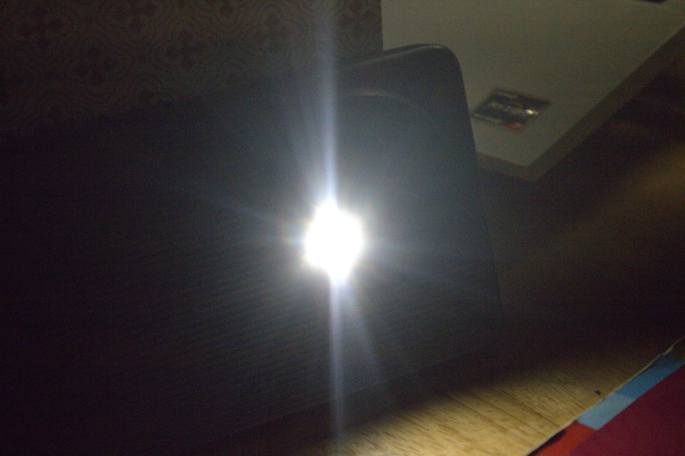
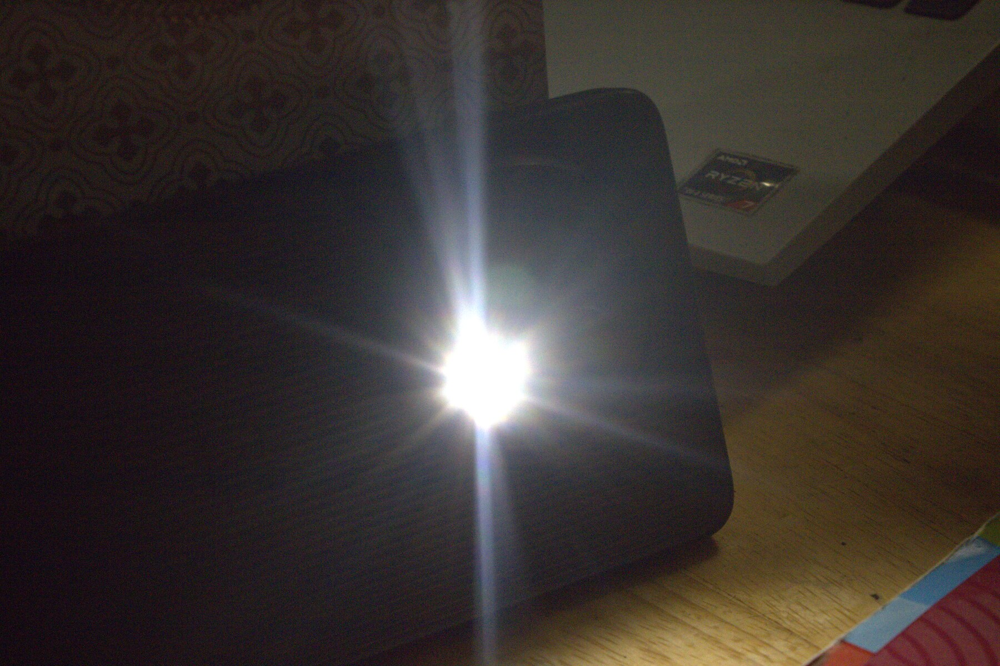
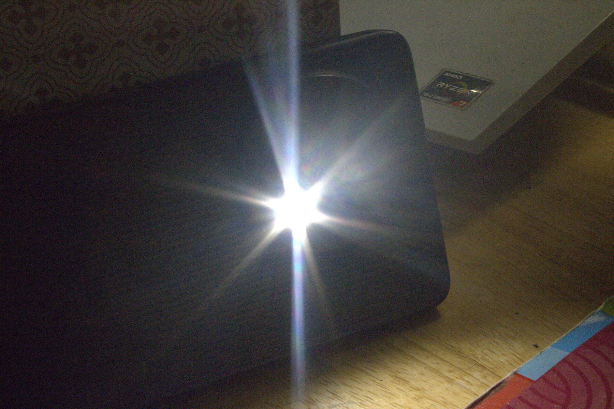
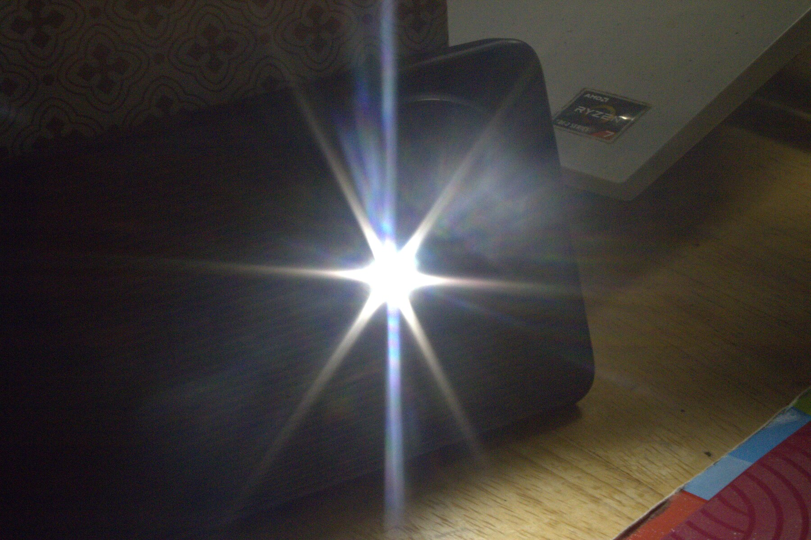

PRACTICAL DEMONSTRATION
Light source photographs captured at different aperture settings. Compare how the diffraction pattern changes as the aperture closes.




Explore the physics of diffraction, aperture and image sharpness.
Light source photographs captured at different aperture settings. Compare how the diffraction pattern changes as the aperture closes.



